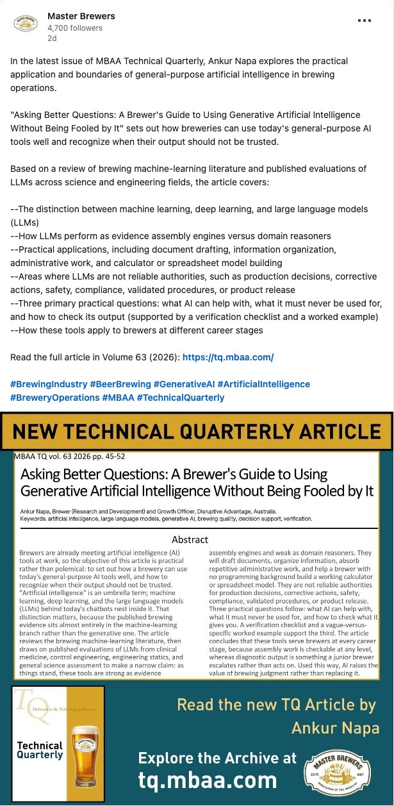

Asking better questions: Ankur Napa's AI guide for brewers is published by MBAA
On 8 October 2026 the Master Brewers Association of the Americas published Ankur Napa's feature article on generative AI in volume 63 of its Technical Quarterly. Ankur teaches AI for Craft Breweries at Craft Beer School. Here is what the association is, what the article says and why it matters for a small Indian brewery.

Craft Beer School's AI instructor is now in a peer-reviewed brewing journal
Every brewer now gets asked whether AI can run the brewhouse. Ankur Napa's answer, eight pages long, is now in print. Asking Better Questions: A Brewer's Guide to Using Generative Artificial Intelligence Without Being Fooled by It runs on pages 45 to 52 of the MBAA Technical Quarterly, volume 63 (2026), and can be found through its DOI, 10.66969/TQ-63-0208-12.
Master Brewers announced it to its 4,700 LinkedIn followers on 10 October with a summary of the article and its first page. You can see that post on LinkedIn. We are very proud of him.

MBAA has served working brewers since 1887
The Master Brewers Association of the Americas (MBAA) is one of the oldest brewing associations in the world, founded in 1887 and today run from Lexington, Kentucky. Its members are the people who make beer happen on the floor: brewers, maltsters, packaging and quality staff, engineers and suppliers, organised into local districts across North and South America that meet for technical talks.
MBAA runs the annual Master Brewers Conference, held from 22 to 24 October 2026 in Virginia Beach, Virginia. It also hosts the Master Brewers Podcast, which marked ten years on air in September 2026. Its Technical Quarterly has published peer-reviewed brewing science and practice since 1964. The archive lives at tq.mbaa.com.
Three rounds of peer review shaped the article
Ankur first talked the idea through with the journal's editor, Dr Harmonie Bettenhausen of the James B. Beam Institute for Kentucky Spirits at the University of Kentucky, in June 2026. Together they settled on AI literacy for working brewers rather than a broad survey of AI in brewing.
Two reviewers and a technical review followed. The draft went through three revisions before it was accepted in August. The article went live in October, about four months after that first conversation.

AI is an umbrella but brewing evidence sits in one branch
The article opens by taking the word apart. Artificial intelligence is an umbrella term covering machine learning, deep learning and the large language models (LLMs) inside today's chatbots. Ankur shows that almost all the published brewing evidence sits in the machine-learning branch, not the generative one.
He then reviews published evaluations of LLMs from clinical medicine, control engineering and general science to reach a narrow conclusion: as things stand, these tools are strong at assembling evidence and weak at reasoning about a domain like brewing.
Good for assembly work, never for the release valve
That split decides where a chatbot belongs. It can draft documents, organise information, take on repetitive admin and help a brewer with no programming background build a working calculator or spreadsheet model. It is not a reliable authority for production decisions, corrective actions, safety, compliance, validated procedures or product release.
The article boils this down to three practical questions: what AI can help with, what it must never be used for and how to check what it gives you. A verification checklist and a worked example comparing a vague question with a specific one support the third.
Small Indian teams have the most to gain
Most brewpubs and microbreweries in India are run by small teams, in which the head brewer also runs the cellar, the lab and the paperwork. Turning 30 brew sheets into one table, drafting a cleaning SOP for review or writing training notes for a new cellar hand can each save hours in a week without putting a batch at risk.
The article is just as clear about career stage. Assembly work can be checked by a brewer at any level, while a diagnosis from an AI tool is something a junior brewer takes to a senior one rather than acts on. Used this way, Ankur concludes, AI raises the value of brewing judgment rather than replacing it.
Read it, then hear him on 1 December
MBAA members can read the full article through the DOI link or the archive at tq.mbaa.com. Ankur joins host John Bryce on the Master Brewers Podcast on 1 December 2026 to talk it through.
To try his approach on your own brew logs first, pick one question you already ask every week, give a chatbot your real numbers and check the answer against the tank before you trust it.
References
- Napa, A. Asking Better Questions: A Brewer's Guide to Using Generative Artificial Intelligence Without Being Fooled by It. MBAA Technical Quarterly 63:45-52, 2026. doi.org/10.66969/TQ-63-0208-12
- Master Brewers, LinkedIn post announcing the article, 10 October 2026. linkedin.com/posts/brewingindustry-beerbrewing-generativeai
- MBAA Technical Quarterly archive. tq.mbaa.com
- Master Brewers Association of the Americas. mbaa.com
Chatty Girija spent more than 30 years in advertising, hosts the Cheers Chatty Beer Podcast and teaches at Craft Beer School.
Common questions
What is MBAA?
The Master Brewers Association of the Americas, a brewing association founded in 1887 for brewers, maltsters, suppliers and other brewing professionals. It publishes the peer-reviewed Technical Quarterly.
Where was Ankur Napa's article published?
In the MBAA Technical Quarterly, volume 63 (2026), pages 45 to 52, on 8 October 2026. Its DOI is 10.66969/TQ-63-0208-12.
Does Ankur teach this at Craft Beer School?
Yes. He teaches AI for Craft Breweries, a live course on getting brewery data into shape and using AI where it genuinely helps.